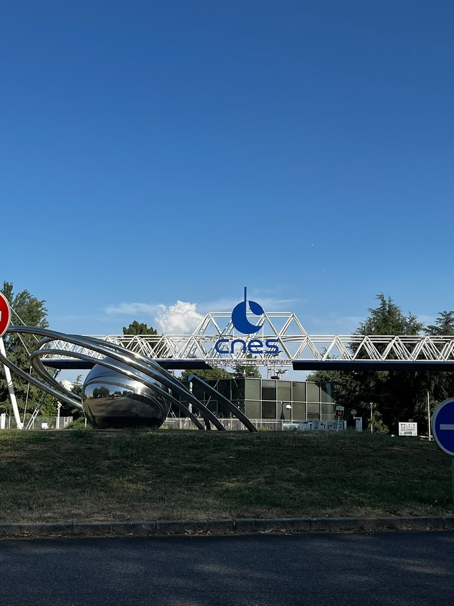
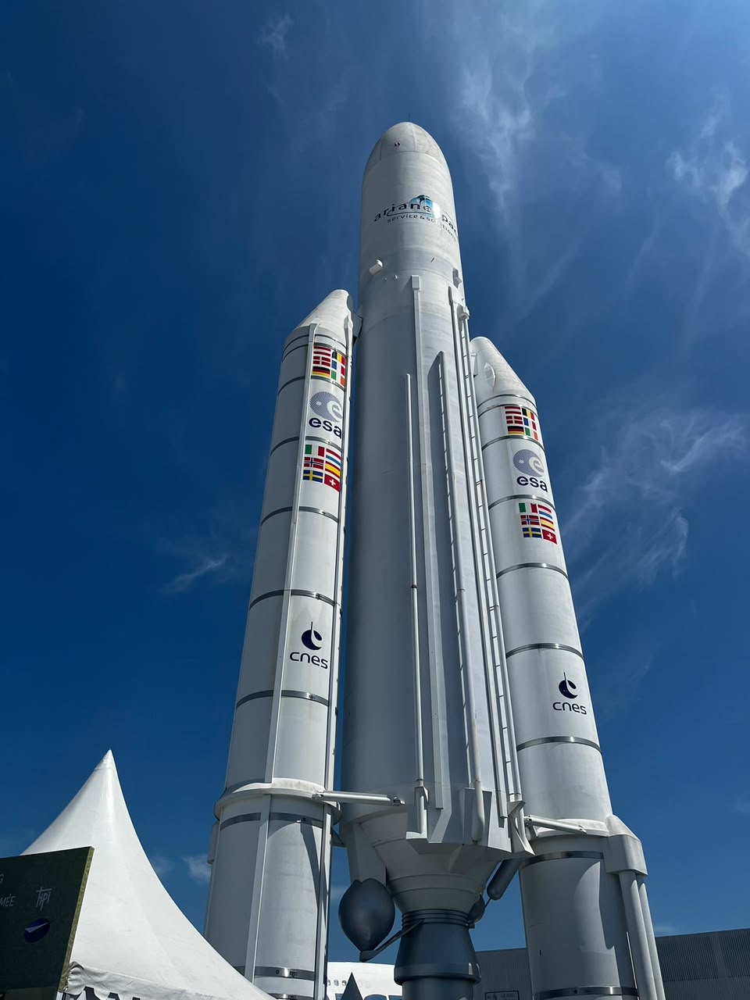
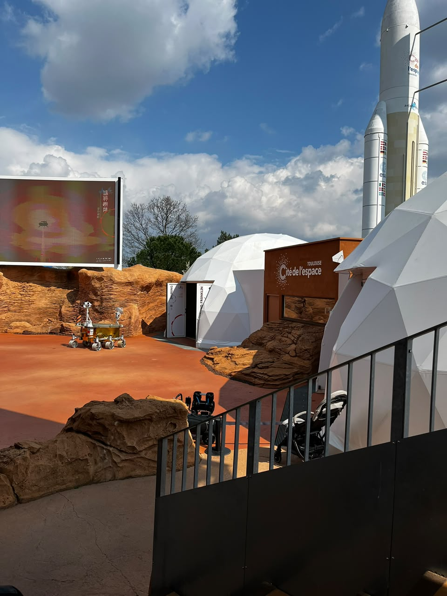
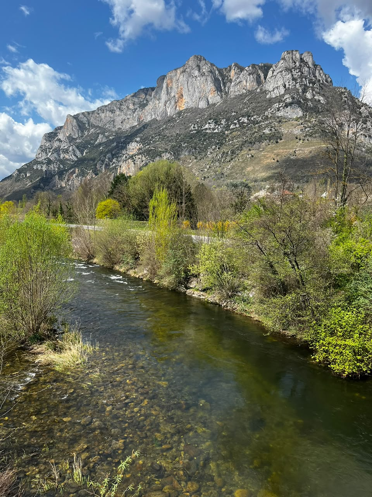
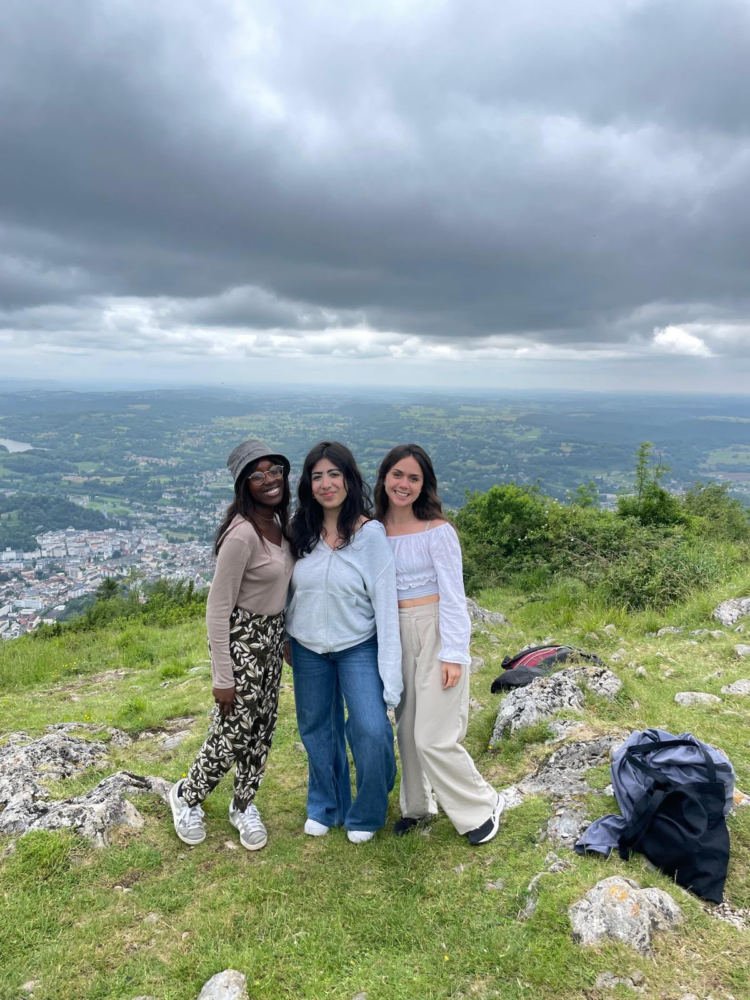
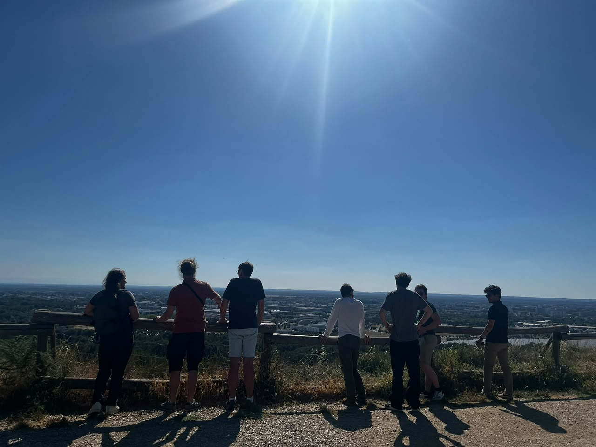
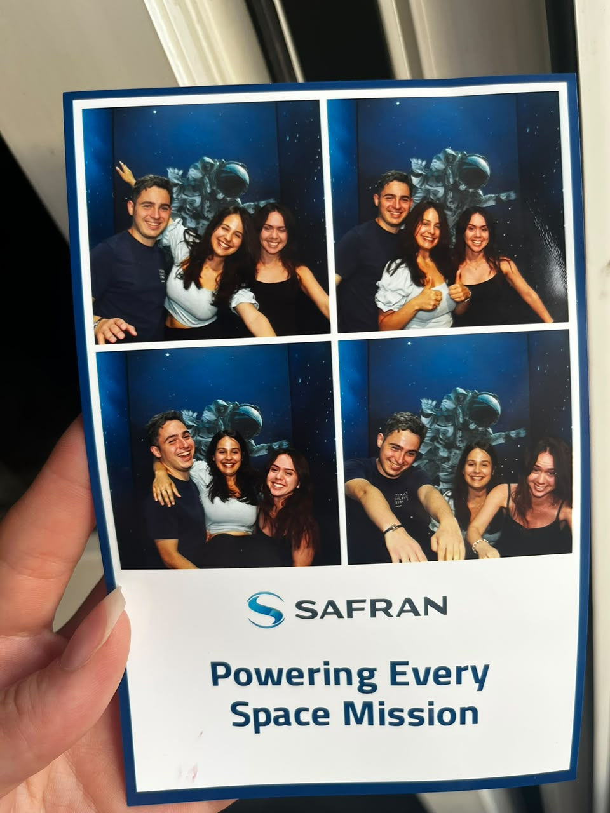
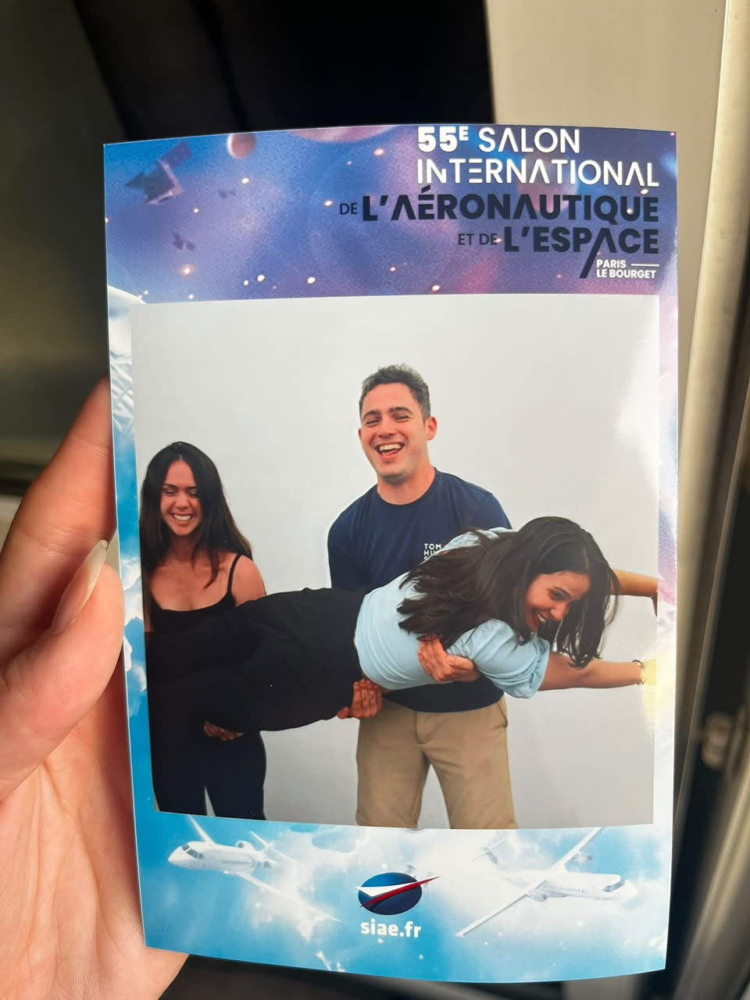

CNES · Toulouse · February to August 2025
Six months in Toulouse with CNES
A student satellite, the team and life in Toulouse during my last semester in France.

In this story
In 2025, I spent six months in Toulouse working on flight software for AEROSAT at CNES. It was my last semester in France, with a new team, friends from different countries and a city I enjoyed getting to know.
Looking for a technical internship
In my final year in France, I was looking for a full-time, six-month internship before returning to Brazil to finish aerospace engineering. I wanted an opportunity to work with satellites or launch vehicles.
I sent around 200 applications, attended career fairs and took part in interviews. The search helped me understand the different roles in the space sector and the requirements of each opportunity.

Choosing the satellite project
I received offers from CERN and CNES. The CERN project involved physics and electronics, with a team I had enjoyed meeting during the selection process.
At CNES, I would work on a student satellite alongside other interns. The project was close to what I wanted to learn, and I liked the idea of being part of that team.
I chose CNES for the chance to work directly on the satellite. That was in 2025. The CERN openlab summer programme, which has its own story in this journal, came in 2026.

Flight software for AEROSAT
AEROSAT is a student nanosatellite project at CNES, within Nanolab Academy. That was one of the things that drew me in. We were students, with support from experienced people, developing a real satellite intended for launch. Knowing that gave the work a very concrete purpose.
I worked on flight software. How the system recovered after a reset, read its memory and organised its tasks. One part involved restoring saved state from FRAM, a memory that retains data without power. I also worked on moving non-critical reads into the background so they wouldn’t hold up startup. These are the technical details behind the experience, and I’ve kept them together on the project page.

Autonomy and technical guidance
My supervisors were always there to help, and we also had a lot of freedom. That combination made a difference. I could take responsibility for my work without feeling that I had to figure everything out alone.
We had weekly meetings, and they encouraged us to ask about the space agency itself, to make the most of being there. I liked that invitation. I was learning to do my work, but I could also ask about the place around me and the people who made it run.


Aerospace in Toulouse
Toulouse was a wonderful place to live while working in space. My curiosity didn’t stop when I left work. I visited museums and exhibitions, saw rockets and spacecraft displays, and also explored aviation. An A380, Concorde, a cockpit. These photos are part of how I remember that period.
I liked being able to see things up close that I had spent so much time studying. And I liked that discovering the city could include all of this, as well as a concert or an afternoon by the river.




The interns and life in Toulouse
I shared an apartment, made French friends and friends from other countries, and spoke French throughout the day. With so many interns, we became close and spent a lot of time together outside work too. There were meals, picnics, walks and plans around the city. Looking at these photos, I remember how much we managed to fit into those months.
It was intense, and we learned a lot. But we also had so much fun. When I was deciding between the two offers, I had hoped to find that kind of company. Getting to live it was one of the best parts of the choice.







Experience for the next step
Having CNES on my CV opened doors. I felt that in the opportunities that came afterwards. But it was also where I built experience working on a satellite with people who knew so much and were willing to teach us. I came back to Brazil with more than a line on my CV to explain.
The next part of this story was my return to Brazil and Visiona. After speaking French every day and learning so much engineering in that language, even explaining my work in Portuguese took some getting used to. That story has its own page here.
Par avion · What I learned
What made the choice worthwhile was the everyday experience. Working on a satellite with people who gave me room to try things and were there when I needed help. I liked that balance of responsibility and guidance. When I think about another internship or project now, I also want to know what the team’s day is like. Those conversations mattered as much to my learning as the project description.